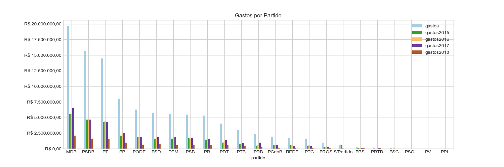

BRASIL - 55ª Legislatura
Informações de despesas de senadores
Dados coletados em
23/03/2018 às
09:22:00



| Nº | Foto | Nome | Despesas no Mandato | Participação | UF | Partido | Escritório e Gabinete | Benefício Moradia |
|---|---|---|---|---|---|---|---|---|
| 1 | Acir Gurgacz | R$ 1.209.176,56 | Titular | RO | PDT | 46 pessoas | 1 mês | |
| 2 | Aécio Neves | R$ 980.508,33 | Titular | MG | PSDB | 26 pessoas | 9 meses | |
| 3 | Airton Sandoval | R$ 267.074,17 | 1º Suplente | SP | PMDB | 29 pessoas | 10 meses | |
| 4 | Alvaro Dias | R$ 478.053,70 | Titular | PR | PODE | 30 pessoas | 0 meses | |
| 5 | Ana Amélia | R$ 663.461,97 | Titular | RS | PP | 21 pessoas | 0 meses | |
| 6 | Ângela Portela | R$ 1.561.368,70 | Titular | RR | PDT | 40 pessoas | 36 meses | |
| 7 | Crédito foto: Senado Federal | Antonio Anastasia | R$ 1.104.743,00 | Titular | MG | PSDB | 19 pessoas | 34 meses |
| 8 | Armando Monteiro | R$ 602.793,22 | Titular | PE | PTB | 36 pessoas | 36 meses | |
| 9 | Ataídes Oliveira | R$ 973.552,59 | 1º Suplente | TO | PSDB | 44 pessoas | 36 meses | |
| 10 | Benedito de Lira | R$ 650.893,40 | Titular | AL | PP | 62 pessoas | 36 meses | |
| 11 | Crédito foto: Beto Oliveira/Supres | Cássio Cunha Lima | R$ 1.177.863,81 | Titular | PB | PSDB | 48 pessoas | 35 meses |
| 12 | Cidinho Santos | R$ 649.796,47 | 1º Suplente | MT | PR | 34 pessoas | 19 meses | |
| 13 | Ciro Nogueira | R$ 1.893.666,64 | Titular | PI | PP | 54 pessoas | 36 meses | |
| 14 | Cristovam Buarque | R$ 246.775,88 | Titular | DF | PPS | 26 pessoas | 0 meses | |
| 15 | Dalirio Beber | R$ 678.439,91 | 1º Suplente | SC | PSDB | 20 pessoas | 31 meses | |
| 16 | Crédito foto: Senado Federal | Dário Berger | R$ 1.007.702,44 | Titular | SC | PMDB | 20 pessoas | 35 meses |
| 17 | Davi Alcolumbre | R$ 1.617.247,25 | Titular | AP | DEM | 41 pessoas | 0 meses | |
| 18 | Eduardo Amorim | R$ 1.078.775,60 | Titular | SE | PSDB | 52 pessoas | 36 meses | |
| 19 | Eduardo Braga | R$ 809.325,32 | Titular | AM | PMDB | 31 pessoas | 21 meses | |
| 20 | Eduardo Lopes | R$ 613.645,61 | 1º Suplente | RJ | PRB | 59 pessoas | 15 meses | |
| 21 | Elber Batalha | R$ 55.437,16 | 2º Suplente | SE | PSB | 48 pessoas | 1 mês | |
| 22 | Elmano Férrer | R$ 1.424.517,83 | Titular | PI | PMDB | 60 pessoas | 34 meses | |
| 23 | Crédito foto: Cleber Medeiros/Supres | Eunício Oliveira | R$ 72.067,93 | Titular | CE | PMDB | 37 pessoas | 0 meses |
| 24 | Fátima Bezerra | R$ 1.036.990,96 | Titular | RN | PT | 33 pessoas | 35 meses | |
| 25 | Fernando Bezerra Coelho | R$ 1.390.219,55 | Titular | PE | PMDB | 33 pessoas | 0 meses | |
| 26 | Fernando Collor | R$ 1.446.944,54 | Titular | AL | PTC | 81 pessoas | 36 meses | |
| 27 | Flexa Ribeiro | R$ 1.525.681,55 | Titular | PA | PSDB | 29 pessoas | 37 meses | |
| 28 | Garibaldi Alves Filho | R$ 873.020,41 | Titular | RN | PMDB | 40 pessoas | 36 meses | |
| 29 | Crédito foto: Senado Federal | Gladson Cameli | R$ 1.832.161,96 | Titular | AC | PP | 40 pessoas | 31 meses |
| 30 | Gleisi Hoffmann | R$ 1.278.249,66 | Titular | PR | PT | 42 pessoas | 36 meses | |
| 31 | Hélio José | R$ 876.165,19 | 1º Suplente | DF | PROS | 76 pessoas | 0 meses | |
| 32 | Humberto Costa | R$ 1.731.793,81 | Titular | PE | PT | 39 pessoas | 36 meses | |
| 33 | Ivo Cassol | R$ 1.332.576,65 | Titular | RO | PP | 68 pessoas | 36 meses | |
| 34 | Jader Barbalho | R$ 672.038,99 | Titular | PA | PMDB | 28 pessoas | 36 meses | |
| 35 | João Alberto Souza | R$ 1.038.638,42 | Titular | MA | PMDB | 84 pessoas | 36 meses | |
| 36 | João Capiberibe | R$ 1.623.774,54 | Titular | AP | PSB | 62 pessoas | 36 meses | |
| 37 | Jorge Viana | R$ 1.307.873,55 | Titular | AC | PT | 35 pessoas | 36 meses | |
| 38 | José Agripino | R$ 1.077.493,24 | Titular | RN | DEM | 46 pessoas | 36 meses | |
| 39 | Crédito foto: Senado Federal | José Maranhão | R$ 905.431,45 | Titular | PB | PMDB | 28 pessoas | 34 meses |
| 40 | José Medeiros | R$ 1.423.136,86 | 1º Suplente | MT | PODE | 29 pessoas | 34 meses | |
| 41 | Crédito foto: Cleber Medeiros/Supres | José Pimentel | R$ 1.678.361,61 | Titular | CE | PT | 41 pessoas | 36 meses |
| 42 | José Serra | R$ 780.068,34 | Titular | SP | PSDB | 25 pessoas | 34 meses | |
| 43 | Kátia Abreu | R$ 501.708,83 | Titular | TO | S/Partido | 44 pessoas | 20 meses | |
| 44 | Lasier Martins | R$ 825.855,24 | Titular | RS | PSD | 20 pessoas | 34 meses | |
| 45 | Crédito foto: Senado Federal | Lídice da Mata | R$ 1.189.859,95 | Titular | BA | PSB | 50 pessoas | 36 meses |
| 46 | Lindbergh Farias | R$ 1.252.481,40 | Titular | RJ | PT | 33 pessoas | 36 meses | |
| 47 | Lúcia Vânia | R$ 927.063,25 | Titular | GO | PSB | 27 pessoas | 36 meses | |
| 48 | Crédito foto: Cleber Medeiros/Supres | Magno Malta | R$ 1.259.155,88 | Titular | ES | PR | 45 pessoas | 36 meses |
| 49 | Maria do Carmo Alves | R$ 375.217,70 | Titular | SE | DEM | 35 pessoas | 1 mês | |
| 50 | Marta Suplicy | R$ 835.668,33 | Titular | SP | PMDB | 37 pessoas | 36 meses | |
| 51 | Omar Aziz | R$ 1.320.707,65 | Titular | AM | PSD | 38 pessoas | 34 meses | |
| 52 | Otto Alencar | R$ 712.114,64 | Titular | BA | PSD | 34 pessoas | 34 meses | |
| 53 | Pastor Bel | R$ 30.225,73 | 2º Suplente | MA | PRTB | 43 pessoas | 0 meses | |
| 54 | Paulo Bauer | R$ 1.400.032,62 | Titular | SC | PSDB | 25 pessoas | 36 meses | |
| 55 | Paulo Paim | R$ 1.339.204,94 | Titular | RS | PT | 37 pessoas | 36 meses | |
| 56 | Crédito foto: Senado Federal | Paulo Rocha | R$ 1.594.509,61 | Titular | PA | PT | 46 pessoas | 19 meses |
| 57 | Pedro Chaves | R$ 747.733,62 | 1º Suplente | MS | PRB | 32 pessoas | 18 meses | |
| 58 | Crédito foto: Senado Federal | Raimundo Lira | R$ 560.576,61 | 1º Suplente | PB | PMDB | 26 pessoas | 0 meses |
| 59 | Randolfe Rodrigues | R$ 1.511.460,41 | Titular | AP | REDE | 48 pessoas | 36 meses | |
| 60 | Crédito foto: Senado Federal | Regina Sousa | R$ 1.239.335,10 | 1º Suplente | PI | PT | 30 pessoas | 35 meses |
| 61 | Reguffe | R$ 3.467,69 | Titular | DF | S/Partido | 10 pessoas | 0 meses | |
| 62 | Crédito foto: Senado Federal | Renan Calheiros | R$ 482.316,02 | Titular | AL | PMDB | 45 pessoas | 36 meses |
| 63 | Ricardo Ferraço | R$ 998.453,29 | Titular | ES | PSDB | 0 pessoas | 32 meses | |
| 64 | Crédito foto: Beto Oliveira/Supres | Roberto Muniz | R$ 590.879,35 | 1º Suplente | BA | PP | 31 pessoas | 17 meses |
| 65 | Roberto Requião | R$ 1.352.938,48 | Titular | PR | PMDB | 28 pessoas | 36 meses | |
| 66 | Roberto Rocha | R$ 1.412.681,69 | Titular | MA | PSDB | 47 pessoas | 29 meses | |
| 67 | Crédito foto: Senado Federal | Romário | R$ 1.127.925,10 | Titular | RJ | PODE | 34 pessoas | 0 meses |
| 68 | Romero Jucá | R$ 1.678.694,47 | Titular | RR | PMDB | 57 pessoas | 17 meses | |
| 69 | Crédito foto: Senado Federal | Ronaldo Caiado | R$ 779.677,36 | Titular | GO | DEM | 46 pessoas | 27 meses |
| 70 | Crédito foto: Senado Federal | Rose de Freitas | R$ 1.138.361,21 | Titular | ES | PMDB | 33 pessoas | 0 meses |
| 71 | Sérgio Petecão | R$ 1.580.237,18 | Titular | AC | PSD | 37 pessoas | 36 meses | |
| 72 | Simone Tebet | R$ 688.517,10 | Titular | MS | PMDB | 26 pessoas | 34 meses | |
| 73 | Tasso Jereissati | R$ 561.867,11 | Titular | CE | PSDB | 16 pessoas | 29 meses | |
| 74 | Telmário Mota | R$ 1.380.533,37 | Titular | RR | PTB | 50 pessoas | 19 meses | |
| 75 | Valdir Raupp | R$ 1.465.858,33 | Titular | RO | PMDB | 63 pessoas | 0 meses | |
| 76 | Crédito foto: Senado Federal | Vanessa Grazziotin | R$ 1.643.133,05 | Titular | AM | PCdoB | 61 pessoas | 36 meses |
| 77 | Crédito foto: Senado Federal | Vicentinho Alves | R$ 1.176.296,78 | Titular | TO | PR | 63 pessoas | 36 meses |
| 78 | Crédito foto: Senado Federal | Waldemir Moka | R$ 937.222,19 | Titular | MS | PMDB | 27 pessoas | 36 meses |
| 79 | Crédito foto: Senado Federal | Wellington Fagundes | R$ 1.352.632,01 | Titular | MT | PR | 42 pessoas | 0 meses |
| 80 | Wilder Morais | R$ 1.099.897,07 | 1º Suplente | GO | PP | 35 pessoas | 36 meses | |
| 81 | Crédito foto: Senado Federal | Zeze Perrella | R$ 1.368.741,57 | 1º Suplente | MG | PMDB | 56 pessoas | 38 meses |
| Nº | Foto | Nome | Despesas no Mandato | Participação | UF | Partido | Escritório e Gabinete | Benefício Moradia |
|---|---|---|---|---|---|---|---|---|
| 1 | Aloysio Nunes Ferreira | R$ 784.872,98 | Titular | SP | PSDB | 0 pessoas | 36 meses | |
| 2 | Crédito foto: Senado Federal | Antonio Carlos Rodrigues | R$ 0,00 | 1º Suplente | SP | PR | 0 pessoas | 0 meses |
| 3 | Crédito foto: Cleber Medeiros/Supres | Antonio Carlos Valadares | R$ 1.112.493,60 | Titular | SE | PSB | 0 pessoas | 36 meses |
| 4 | Crédito foto: Senado Federal | Blairo Maggi | R$ 289.345,05 | Titular | MT | PR | 0 pessoas | 24 meses |
| 5 | Clovis Fecury | R$ 0,00 | 1º Suplente | MA | DEM | 0 pessoas | 0 meses | |
| 6 | Deca | R$ 182.853,10 | 1º Suplente | PB | PSDB | 0 pessoas | 5 meses | |
| 7 | Crédito foto: Cleber Medeiros/Supres | Delcídio do Amaral | R$ 266.903,21 | Titular | MS | S/Partido | 0 pessoas | 13 meses |
| 8 | Crédito foto: Senado Federal | Donizeti Nogueira | R$ 469.601,43 | 1º Suplente | TO | PT | 0 pessoas | 16 meses |
| 9 | Crédito foto: Senado Federal | Douglas Cintra | R$ 403.665,63 | 1º Suplente | PE | PTB | 0 pessoas | 16 meses |
| 10 | Edison Lobão | R$ 964.912,80 | Titular | MA | PMDB | 0 pessoas | 0 meses | |
| 11 | Crédito foto: Senado Federal | Fernando Ribeiro | R$ 33.790,27 | 1º Suplente | PA | PMDB | 0 pessoas | 0 meses |
| 12 | Fleury | R$ 0,00 | 2º Suplente | GO | DEM | 0 pessoas | 0 meses | |
| 13 | Geovani Borges | R$ 0,00 | 1º Suplente | AP | PMDB | 0 pessoas | 0 meses | |
| 14 | Gilberto Piselo | R$ 3.950,84 | 1º Suplente | RO | PDT | 0 pessoas | 0 meses | |
| 15 | João Costa | R$ 0,00 | 1º Suplente | TO | PPL | 0 pessoas | 0 meses | |
| 16 | Crédito foto: Jefferson Rudy/Agência Senado | José Aníbal | R$ 267.876,30 | 1º Suplente | SP | PSDB | 0 pessoas | 7 meses |
| 17 | Kaká Andrade | R$ 0,00 | 2º Suplente | SE | PDT | 0 pessoas | 0 meses | |
| 18 | Crédito foto: Senado Federal | Lauro Antonio | R$ 0,00 | 1º Suplente | SE | PR | 0 pessoas | 0 meses |
| 19 | Lobão Filho | R$ 0,00 | 1º Suplente | MA | PMDB | 0 pessoas | 0 meses | |
| 20 | Luiz Henrique | R$ 141.541,22 | Titular | SC | PMDB | 0 pessoas | 4 meses | |
| 21 | Marcelo Crivella | R$ 666.365,93 | Titular | RJ | PRB | 0 pessoas | 24 meses | |
| 22 | Odacir Soares | R$ 0,00 | 2º Suplente | RO | PP | 0 pessoas | 0 meses | |
| 23 | Pastor Valadares | R$ 124.881,02 | 2º Suplente | RO | PDT | 0 pessoas | 4 meses | |
| 24 | Crédito foto: Senado Federal | Paulo Davim | R$ 0,00 | 1º Suplente | RN | PV | 0 pessoas | 0 meses |
| 25 | Pedro Taques | R$ 28,59 | Titular | MT | PDT | 0 pessoas | 0 meses | |
| 26 | Pinto Itamaraty | R$ 134.755,84 | 1º Suplente | MA | PSDB | 0 pessoas | 4 meses | |
| 27 | Reditario Cassol | R$ 0,00 | 1º Suplente | RO | PP | 0 pessoas | 0 meses | |
| 28 | Crédito foto: Senado Federal | Ricardo Franco | R$ 91.224,82 | 1º Suplente | SE | DEM | 0 pessoas | 10 meses |
| 29 | Rodrigo Rollemberg | R$ 45,75 | Titular | DF | PSB | 0 pessoas | 0 meses | |
| 30 | Sandra Braga | R$ 533.642,79 | 1º Suplente | AM | PMDB | 0 pessoas | 16 meses | |
| 31 | Sérgio de Castro | R$ 59.450,71 | 1º Suplente | ES | PDT | 24 pessoas | 1 mês | |
| 32 | Sergio Souza | R$ 0,00 | 1º Suplente | PR | PMDB | 0 pessoas | 0 meses | |
| 33 | Thieres Pinto | R$ 94.386,43 | 1º Suplente | RR | PTB | 0 pessoas | 0 meses | |
| 34 | Tomás Correia | R$ 0,00 | 1º Suplente | RO | PMDB | 0 pessoas | 0 meses | |
| 35 | Crédito foto: Senado Federal | Virginio de Carvalho | R$ 47.161,41 | 2º Suplente | SE | PSC | 0 pessoas | 2 meses |
| 36 | Walter Pinheiro | R$ 393.721,39 | Titular | BA | S/Partido | 0 pessoas | 17 meses | |
| 37 | Wirlande da Luz | R$ 11.662,94 | 1º Suplente | RR | PMDB | 0 pessoas | 0 meses |